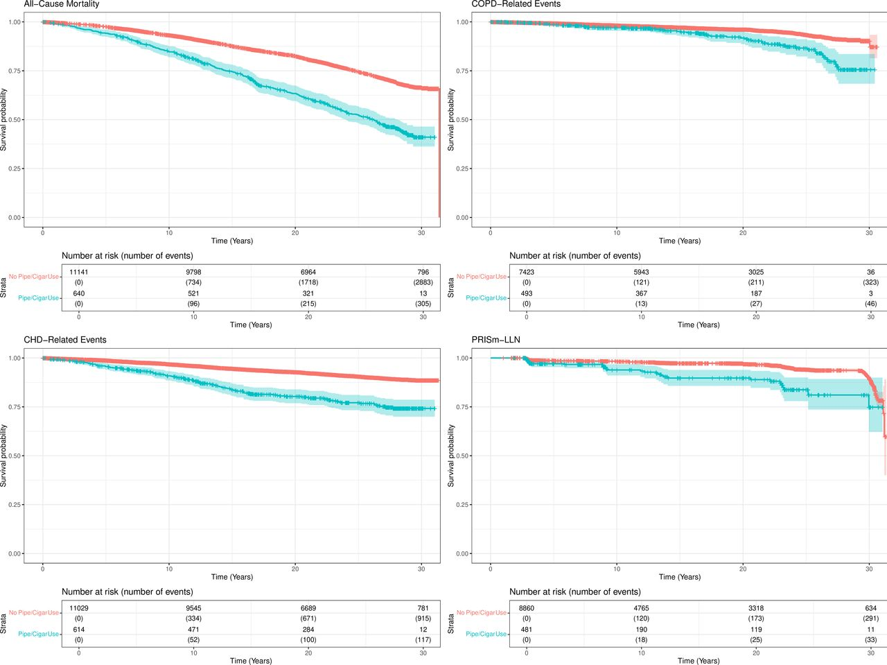
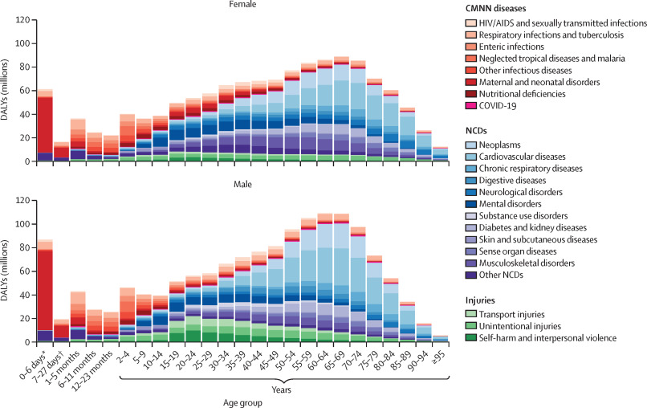
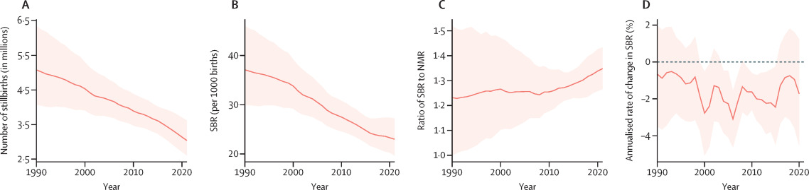
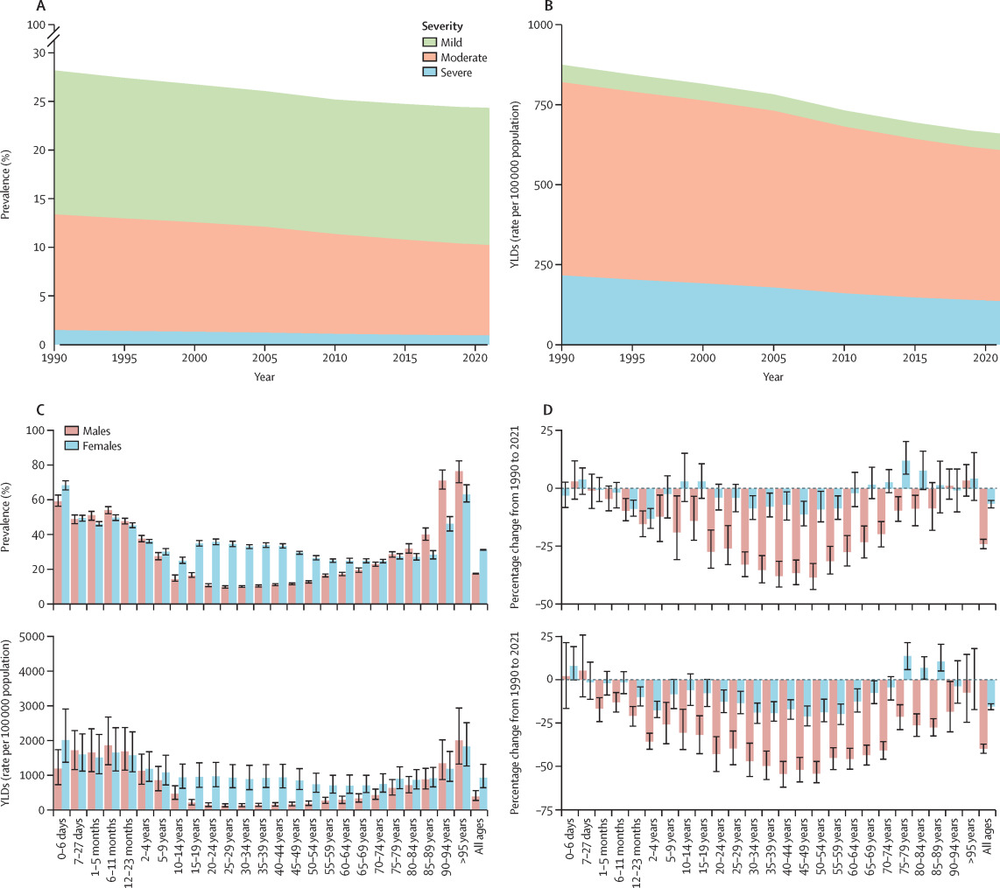
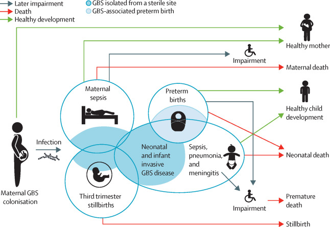
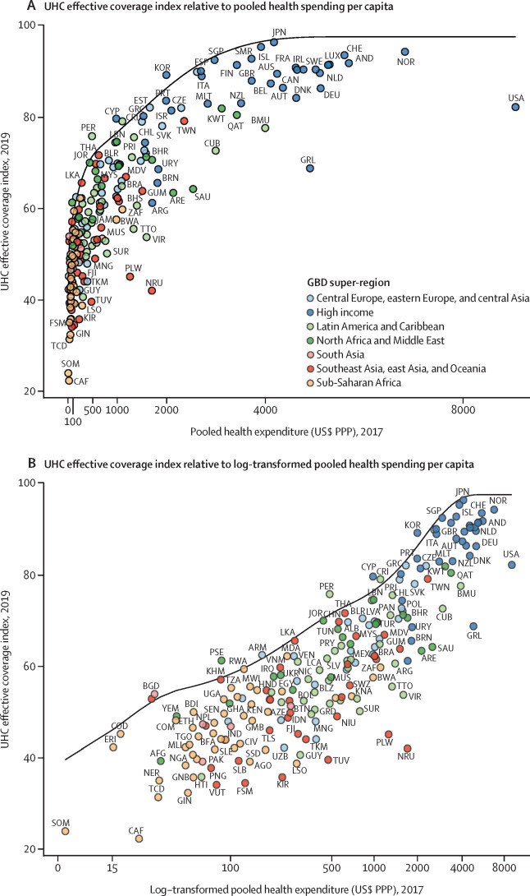

Where my work sits
I trained in global health metrics at the Institute for Health Metrics and Evaluation before entering clinical medicine. My current work is at the intersection between the two — building evidence on population disease burden and global health policy informed by clinical practice.
- Infectious disease & pandemic preparedness
- Respiratory epidemiology
- Global burden of disease & health metrics
- Health systems strengthening & critical care capacity
Selected publications






Research
Learn more →A systematic analysis of mortality and disability across 204 countries and territories, quantifying health loss from hundreds of diseases, injuries, and risk factors from 1990 to the present.
A large US population-based sample harmonizing nine NIH-funded cohorts to study respiratory and cardiovascular health outcomes and their determinants over time.
Writing & media
All pieces →Discusses the global anemia burden—nearly 2 billion people affected—its underlying causes, vulnerable populations, and the evidence for multi-pronged intervention strategies.
An interview on why addressing anemia requires tackling its diverse underlying causes rather than relying on iron supplementation alone.
Radio interview on the global anemia burden and its implications for public health policy.